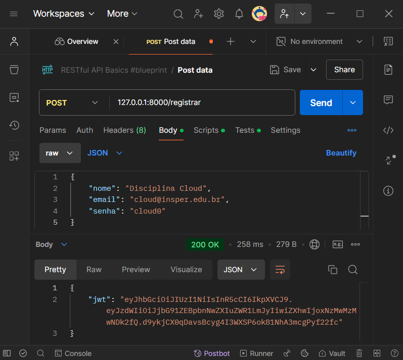
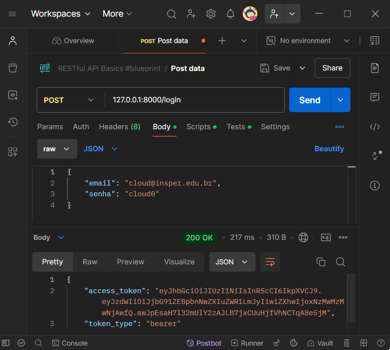
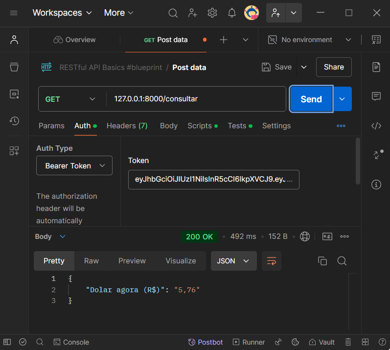

Visão geral
Descrição
Este projeto é uma API RESTful desenvolvida para realizar o registro e autenticação de usuários, além de fornecer a cotação atual do dólar em reais. A API foi construída com FastAPI e utiliza JWT para autenticação, garantindo segurança no acesso ao endpoint de consulta. A consulta de cotação do dólar é realizada via web scraping da página Dólar Hoje, enquanto o gerenciamento de usuários e suas informações é feito utilizando o banco de dados MySQL, executado em um container Docker para facilitar a portabilidade e consistência do ambiente.
Funcionalidades
- Registro de novos usuários com criação de token JWT
- Autenticação de usuários com retorno de token JWT
- Consulta da cotação do dólar, acessível apenas para usuários autenticados
Veja o vídeo de demonstração da API abaixo:
Pré-requisitos
- Docker instalado na máquina.
Passos para execução
1. Crie um arquivo compose.yaml
No diretório de sua preferência, crie um arquivo chamado compose.yaml com o seguinte conteúdo (você também pode baixa-lo no repositório do projeto):
services:
db:
image: mysql:9.1.0
environment:
MYSQL_ROOT_PASSWORD: ${ROOT_PASSWORD:-projeto}
MYSQL_DATABASE: ${DATABASE_NAME:-projeto}
MYSQL_USER: ${USER:-projeto}
MYSQL_PASSWORD: ${PASSWORD:-projeto}
ports:
- "3306:3306"
api:
image: lucasouzamil/projeto-api-consulta-dolar:v1.0
environment:
# Informações da conectividade com o DB
- USER=${USER:-projeto}
- PASSWORD=${PASSWORD:-projeto}
- SERVER=db
- PORT=3306
- DATABASE_NAME=${DATABASE_NAME:-projeto}
# Informações da JWT
- SECRET_KEY=${SECRET_KEY:-key_super_secreta}
- ALGORITHM=${ALGORITHM:-HS256}
- ACCESS_TOKEN_EXPIRE_MINUTES=${ACCESS_TOKEN_EXPIRE_MINUTES:-30}
ports:
- "8000:8000"
depends_on:
- db
restart: always
2. Configurar variáveis personalizadas (opcional)
Para usar variáveis personalizadas, crie um arquivo .env no mesmo diretório do compose.yaml (você também pode baixar o arquivo .env.example no repositório do projeto e renomea-lo). Adicione nele as variáveis com os valores desejados, por exemplo:
#Informações da conectividade com o DataBase
ROOT_PASSWORD=SenhaSuperSecretaRoot
USER=NomeDeUsuarioDoDataBase
PASSWORD=SenhaSuperSecretaUsuario
DATABASE_NAME=NomeDoDatabase
# Informações da JWT
SECRET_KEY=KeySuperSecretaDeCryptografia
ACCESS_TOKEN_EXPIRE_MINUTES=30 #minutos
Isso permite que você altere as configurações sem modificar o compose.yaml.
3. Iniciar os serviços com o Docker Compose
No terminal, navegue até o diretório onde está o compose.yaml e execute o comando:
4. Acessar a aplicação
Com os serviços ativos, acesse a aplicação em http://localhost:8000. A documentação interativa da API estará disponível em http://localhost:8000/docs.
OBS: Para requisições que utilizam autenticação JWT, utilize outras formas de consulta, como o Postman.
Documentação da API
1. POST /registrar
Registra um novo usuário e retorna um token JWT.
-
Rquest: JSON
-
Response: JSON
2. POST /login
Autentica o usuário e retorna um token JWT.
-
Request: JSON
-
Response: JSON
3. GET /consultar
Retorna a cotação atual do dólar em reais. Requer autenticação via JWT.
-
Header:
-
Response: JSON
Demonstração
1. POST /registrar

2. POST /login

3. GET /consultar

Docker Hub
A imagem deste projeto está disponível no Docker Hub: Imagem Docker do Projeto